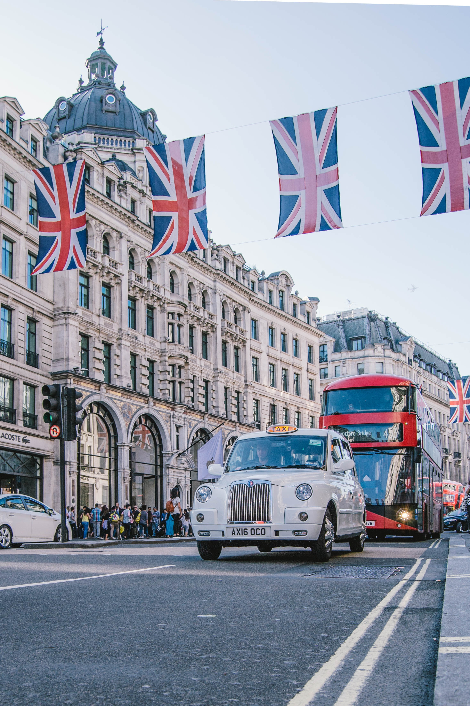
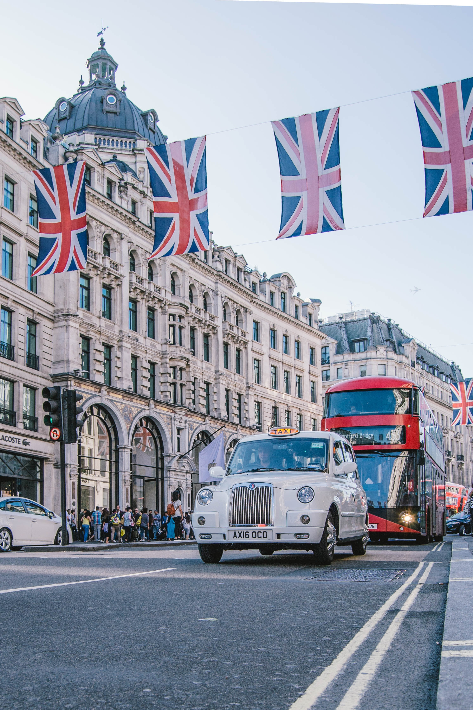

| Euro | Britse Pond |
| € 1,00 | £ 0,9017 |
Regent Street
Aangrensend aan Oxford Street vind je Regent Street. Regent Street is een prachtige straat met voornamelijk witte gebouwen uit de 18e eeuw. Deze winkelstraat is mede bekend door zijn uitbundige versiering tijdens de kerstperiode in Londen. De winkels in Regent Street zijn wat stijvoller en ook duurder dan in Oxford Street. Winkels die je hier kan vinden zijn o.a. Apple Store, Burberry en Austin Reeds. Het is zeker de moeite waard om even langs de wereldberoemde speelgoedwinkel Hamley's te gaan.


Carnaby Street
Carnaby Street is eigenlijk een winkelgebied van 12 straten en is gelegen in de wijk West End. Carnaby Street is bekend geworden in de jaren zestig doordat hier de culturele revolutie van dit tijdperk is begonnen. De straten van dit winkelgebied zijn klein en gezellig en niet te vergelijken met Oxford Street. Er zijn nog vele modeontwerpers gevestigd. Daarnaast bevinden zich hier veel kleine onafhankelijke winkels en dus minder winkelketens. Om van het shoppen bij te komen zijn er veel leuke restaurants en kroegjes waar je naar toe kan gaan.